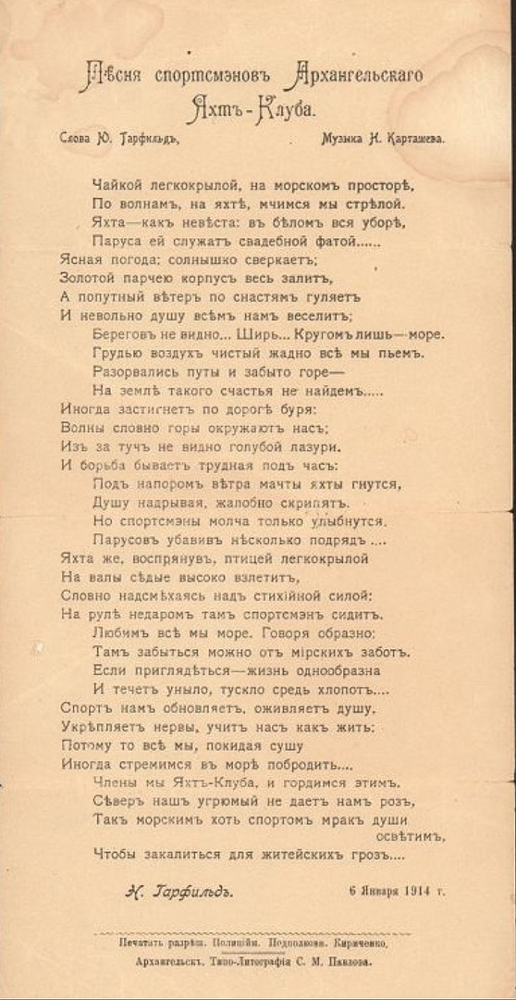

Пъсня спортсмэновъ
Архангельскаго Яхтъ-Клуба
Чайкой легкокрылой, на морскомъ просторѣ,
По волнамъ, на яхтѣ, мчимся мы стрѣлой.
Яхта – какъ невѣста: въ бѣломъ вся въ уборѣ,
Паруса ей служатъ свадебной фатой...
Ясная погода; солнышко сверкаетъ;
Золотой порчею корпусъ весь залитъ,
А попутный вѣтеръ по снастямъ гуляетъ
И не вольно душу всѣмъ намъ веселитъ;
Береговъ не видно… Ширь… Кругомъ лишь – море.
Грудью воздухъ чистый жадно всѣ мы пьёмъ.
Разорвались путы и забыто горе –
На землѣ такаго счастья не найдемъ….
Иногда застигнетъ по дорогѣ буря:
Волны словно горы окружаютъ насъ;
Изъ за тучъ не видно голубой лазури.
И борьба бываетъ трудная подъ часъ:
Подъ напоромъ вѣтра мачты яхты гнуться,
Душу надрывыя, жалобно скрипятъ.
Но спортсмэны молча только улыбнутся.
Парусовъ убавивъ нѣсколько подрядъ…
Яхта же, воспрянувъ, птицей легкокрылой
На волны сѣдые высоко взлетитъ,
Словно надсмѣхаясь надъ стихійной силой;
На рулѣ недаромъ тамъ спортсмэнъ сидитъ.
Любимъ всѣ мы море. Говоря образно;
Тамъ забыться можно отъ мірскихъ заботъ.
Если приглядѣться - Жизнь однообразна
И течетъ уныло, тускло средь хлопотъ…
Спортъ намъ обновляетъ, оживляетъ душу.
Укрѣпляетъ нервы, учитъ насъ какъ жить;
Потому то всѣ мы, покидая сушу
Иногда стремимся въ морѣ побродить …
Члены мы Яхтъ-Клуба, и гордимся этимъ.
Сѣверъ нашъ угрюмый не даётъ намъ розъ,
Такъ морскимъ хоть спортомъ мракъ души освѣтимъ,
Чтобъ закалиться для житейскихъ грозъ…